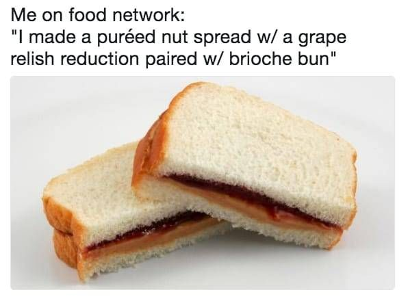

Brioche Sandwich

Wait...isn't this vaugely familar?
Ingredients
- The finest Brioche Bread
- Pureed Nut Spread
- Grape Relish Reduction
- Butter Knife
Steps
- Remove 2 slices of bread from plastic bag, really...it is brioche
- Pour liquid off of imported nut spread
- Get grape relish reduction from fridge, ignore date on jar
- Spread nut spread on left slice. Left ONLY.
- Spread grape relish reduction on left side. Ignore previous direction. Definently left.
- Smash slices together
- Leave dirty butter knife on edge of kitchen sink
- Roll bread bag up and set tail under loaf
- Ignore jar of relish and nut butter on counter
- Enjoy!
Home